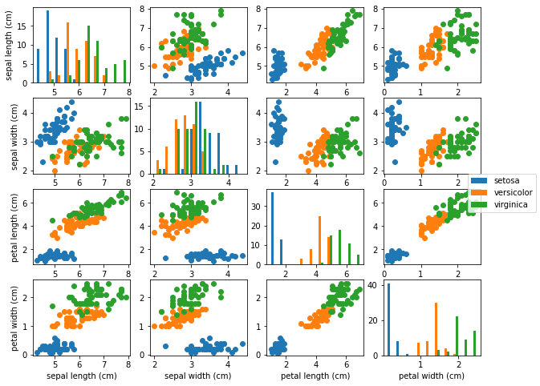

Scikit-learn is a powerful set of tools and techniques for various machine learning (ML) tasks, including classification, regression, clustering, dimensionality reduction, model selection, and data preprocessing.
By the end of this lesson, you should have a basic understanding of some of the most common ML techniques as well as how to implement and apply them in Python with scikit-learn.
For more information about the other ML techniques as well as more details about those methods discussed here, check out the scikit-learn API: https://scikit-learn.org/stable/modules/classes.html#.
Learning objectives
What is machine learning?
Applying pre-processors and transformers to manipulate and transform input data.
Fitting and evaluating an estimator on your data.
Introduction to Machine Learning
Before we dive into various ML techniques and applying them to actual data, let’s first introduce some datasets that we’ll be using throughout this lesson and some basic ML notions. Datasets can come in various forms and shapes, and the same data can typically be applied to many different learning algorithms. Fortunately, scikit-learn has a few standard datasets built in that we’ll be using: the iris dataset, the digits dataset, and the diabetes dataset. Let’s examine the iris dataset briefly to introduce some basic concepts.
# Load the iris datasetfrom sklearn import datasetsiris = datasets.load_iris()# Look at the featuresprint(type(iris.data), iris.data.shape)print(iris.data[:5, :])# Look at the target variablesprint(type(iris.target), iris.target.shape)print(iris.target_names)
The datasets in scikit-learn are dictionary-like objects that contain the data and some metadata. The data itself is stored in the .data attribute, and as seen above, the iris data is stored as a numpy array of size (150, 4). This corresponds to 150 plants and 4 measurements per plant, forming the “design matrix” that is typically of the size (n_samples, n_features). The 150 samples correspond to 150 plants that span 3 different iris species: setosa, versicolor, virginica. These species define our target variables and are also stored in a numpy array of size (150,). Values in this array are integers (0, 1, or 2) corresponding to the species of the plant. Features are attributes or predictors of a sample that are assumed to be predictive for a specific task. For example, the 4 features of the iris dataset correspond to sepal length (cm), sepal width (cm), petal length (cm), and petal width (cm). A physical visualization of these features can be seen below:
Iris Dataset
We can also visualize the distributions of the data and pair-wise scatterplots. (Which features might be the most predictive of iris species? Which might be the least predictive?)
import numpy as npimport matplotlib.pyplot as pltdef pair_plot(data, labels, feature_names, label_names, size=(10, 8)):# Get shape info of dataassertlen(data.shape) ==2 n_samples = data.shape[0] n_feats = data.shape[1]# Separate data and labels based on classes unique_ys = np.unique(labels) X_sep, y_sep = [], []for unique_y in unique_ys: X = [data[i, :] for i inrange(n_samples) if labels[i] == unique_y] X_sep.append(np.stack(X)) y = [labels[i] for i inrange(n_samples) if labels[i] == unique_y] y_sep.append(np.stack(y))# Plot the pair components fig = plt.figure(figsize=size)for i inrange(n_feats):for j inrange(n_feats):# If on diagonal, then plot a histogramif i == j: plt.subplot(n_feats, n_feats, n_feats*i+j+1) plt.hist([X[:,j] for X in X_sep])# If off diagonal, then plot a scatter plotelse: plt.subplot(n_feats, n_feats, n_feats*i+j+1)for X in X_sep: plt.scatter(X[:, j], X[:, i])# If on left most column, add ylabelif j ==0: plt.ylabel(feature_names[i])# If on bottom most row, add xlabelif i == n_feats-1: plt.xlabel(feature_names[j])# Add legend and show fig.legend([label_name for label_name in label_names], loc='center right') plt.show()pair_plot(iris.data, iris.target, iris.feature_names, iris.target_names)

A typical ML problem for this dataset might be defined as follows: Given the measurements of sepal length, sepal width, petal length, and petal width from an iris plant, predict the specific iris species of that plant.
The problem defined above falls into the category of supervised learning, whereby we use the features of an example to predict a certain target variable for that example. In our iris dataset example, the target variable is species. Because our target variable falls into one of 3 distinct classes (setosa, versicolour, or virginica), this is also a classification problem, wherein we try to predict a qualitative value or assign an example to a specific class. Another supervised learning problem is regression, wherein we try to predict a quantitative value for an example. For the iris plants, one might imagine using the same measurements to try to predict the age of the plant. (Of course, we’d need a new dataset for this problem. Why?)
Another category of ML problems is unsupervised learning. Here, the task is a little less defined and more ambiguous. In theory, the idea is to learn about some patterns and/or structure within the data without the use of a specific target variable. For example, imagine we were just given iris.data and there were no iris.target. We can then use an unsupervised learning approach, such as clustering, to try to figure out if there is any structure to our data. Clustering, for instance, attempts to form groups of examples that are grouped based on similarity, wherein more similar examples are grouped together and dissimilar examples are in separate groups.
Note that a ML technique or algorithm does not have to cleanly fit into one of these categories. There are many examples of methods that combine supervised and unsupervised learning as well as regression and classification.
The goal of ML is learn some properties of a dataset and apply these learned properties to unseen or new data. In this mindset, we want to learn something about the data we have that is generalizable to future data. In order to approximate how well our model or technique is performing, it is standard to create a training set and a testing set. The training set is the data that the model or ML technique actually sees and can learn from. The testing set is then used to see how well the learned properties correspond to real unseen data. Scikit-learn has a convenient utility function to do just this:
from sklearn.model_selection import train_test_split# Get our features and targetsX, y = iris.data, iris.target# Shuffle and split our dataset with 25% of it going to the testing setX_train, X_test, y_train, y_test = train_test_split(X, y, test_size=0.25, shuffle=True)# Examine the shapes of the split datasetprint(X_train.shape, X_test.shape)print(y_train.shape, y_test.shape)
(112, 4) (38, 4)
(112,) (38,)
Preprocessing Data
Unfortunately, real world data isn’t as clean as the datasets that we can load from sklearn.datasets. Fortunately, there are some built-in data preprocessing utilities that we can use to help us prepare our data for various ML techniques. Here we’ll briefly introduce five of these utilities: the StandardScaler, the Normalizer, the OrdinalEncoder, the KBinsDiscretizer, and PolynomialFeatures.
(Note that in these examples, .fit() and then .transform() is used. An alternative to this would be the .fit_transform() method which fits and transforms the data and the same time.)
StandardScaler
Standardization is a typical requirement for many ML techniques as they assume the data looks standard normally distributed. While the true distribution is commonly not Gaussian, we often ignore this and just center the data by subtracting the mean for each feature and scaling them by their standard deviation. This can be easily accomplished with the StandardScaler.
The StandardScaler must be “fit” to data using the .fit() method. This method will compute the mean and standard deviation of the input data and store these within the StandardScaler object. These values can then be used to transform the input data and any other data with the .transform() method. (Should we create two different StandardScaler and scale the training and testing set separately? Why or why not?)
from sklearn import preprocessingimport numpy as np# Create some fake training dataX_train = np.array([[1., -1., 2.], [2., 0., 0.], [0., 1., -1.]])print('Original data mean:', X_train.mean(axis=0))print('Original data std dev:', X_train.std(axis=0))# Create the StandardScaler and fit to the datascaler = preprocessing.StandardScaler().fit(X_train)# View the stored scaling valuesprint('Mean: ', scaler.mean_)print('Std. dev: ', scaler.scale_)# Apply the same transformation to other dataX_scaled = scaler.transform(X_train)# Verify the resultprint('Scaled data mean:', X_scaled.mean(axis=0))print('Scaled data std dev:', X_scaled.std(axis=0))
Original data mean: [1. 0. 0.33333333]
Original data std dev: [0.81649658 0.81649658 1.24721913]
Mean: [1. 0. 0.33333333]
Std. dev: [0.81649658 0.81649658 1.24721913]
Scaled data mean: [0. 0. 0.]
Scaled data std dev: [1. 1. 1.]
Normalization
Normalization another common technique and involves scaling individual samples to have unit norm. This is useful for techniques that utilize a quadratic form or applying kernels to quantify similarity between pairs of samples and normalization is a base assumption for certain techniques.
The Normalizer can be used to easily transform samples based on various norms including the \(\ell_{1}\) , \(\ell_{2}\), and max norms. When creating the Normalizer, it does not need the .fit() method (though it can be used, this method doesn’t do anything because the class is stateless). The .transform() method can then be used to normalize any data. (Should we create two different Normalizer and normalize the training and testing set separately? Why or why not?)
# Create some fake training dataX_train = [[1., -1., 2.], [2., 0., 0.], [0., 1., -1.]]# Create l2 Normalizer (fit does nothing)normalizer_l2_fit = preprocessing.Normalizer(norm='l2').fit(X_train)normalizer_l2 = preprocessing.Normalizer(norm='l2')# Transform based on l2 normX_norm1 = normalizer_l2_fit.transform(X_train)X_norm2 = normalizer_l2.transform(X_train)print('L2 Normalized:')print(X_norm1)print(X_norm2)print()# Can also create l1 and max norm Normalizernormalizer_l1 = preprocessing.Normalizer(norm='l1')normalizer_max = preprocessing.Normalizer(norm='max')# Transform based on l1 and max normsX_l1 = normalizer_l1.transform(X_train)print('L1 Normalized:')print(X_l1)print()X_max = normalizer_max.transform(X_train)print('Max Normalized:')print(X_max)
Commonly some features are not continuous or even quantitative values, but rather categorical. For example, a person could be from [“North Carolina”, “South Carolina”, “Georgia”, “Virginia”, “Florida”, etc.]. These features can be conveniently transformed to a new feature of integers from 0 to n_categories-1. (Why can’t we just use the original categorical features?)
The OrdinalEncoder can be used to efficiently transform any input categorical features. Like the other preprocessors, we use the .fit() and .transform() methods to do the transformation. There is additional methods to perform the inverse transformation.
Discretization is a common technique where by continuous values are binned or partitioned into discrete values. One-hot encoded discretized features, for example, can make some models more expressive.
The KBinsDiscretizer can be used to easily discretize features into \(k\) bins. The actual encoding of the features can be set as a parameter and as default is one-hot encoding. (Here we also show ‘ordinal’ encoding). Like the other preprocessors, the KBinsDiscretizer can be .fit() and then can use .transform() to discretize features. Note that when using one-hot encoding, the output will be stored in a sparse matrix representation.
Often, higher order and interaction terms of the features can be useful for many ML techniques. These can be easily acquired via PolynomialFeatures. In the example below, features of a sample \((X_{1}, X_{2})\) are transformed to \((1, X_{1}, X_{2}, X_{1}^{2}, X_{1}X_{2}, X_{2}^{2})\).
Let’s dive into some common machine learning algorithms, specifically linear regression, logistic regression, k-nearest neighbors, support vector machines, and random forests. Before we get started, let’s load some datasets. We’ll be using the iris dataset that we introduced earlier for various classification tasks. For regression tasks, we’ll be using the diabetes dataset. For both these datasets, we’ll use a training/testing split of 75%/25%.
from sklearn import datasetsfrom sklearn.model_selection import train_test_split# Construct training and testing sets for iris datasetiris = datasets.load_iris()X_clf, y_clf = iris.data, iris.targetX_clf_trn, X_clf_tst, y_clf_trn, y_clf_tst = train_test_split(X_clf, y_clf, test_size=0.25, shuffle=True)# Construct training and testing sets for diabetes datasetdiabetes = datasets.load_diabetes()X_reg, y_reg = diabetes.data, diabetes.targetX_reg_trn, X_reg_tst, y_reg_trn, y_reg_tst = train_test_split(X_reg, y_reg, test_size=0.25, shuffle=True)
Linear Regression
Linear regression is a classic machine learning algorithm that fits a linear combination of the features to a continuous value. As the name says, this technique is for regression problems, and as such, we’ll be applying it to the diabetes dataset. The basic form of linear regression attempts to find good coefficient values for a model of the form: \[ y = \beta_{0} + \beta_{1} X_{1} + \beta_{2} X_{2} + \dots + \beta_{p} X_{p} + \varepsilon,\] where \(y\) is the regression target, \(\beta_{i}\) for \(i \in \{0 \dots p\}\) are the regression coefficients, \(X_{i}\) for \(i \in \{1 \dots p\}\) are the features, and \(\varepsilon\) is the irreducible error.
from sklearn.linear_model import LinearRegressionfrom sklearn.metrics import mean_squared_error, r2_score# Perform the regressionlin_reg = LinearRegression().fit(X_reg_trn, y_reg_trn)# Predict on test sety_pred = lin_reg.predict(X_reg_tst)# MSEprint('Mean squared error: \n%.2f'% mean_squared_error(y_reg_tst, y_pred))# Coefficient of determination (R^2)print('R squared: \n%.2f'% r2_score(y_reg_tst, y_pred))
Mean squared error:
2424.09
R squared:
0.52
Logistic Regression
Logistic regression is another classic machine learning algorithm that fits a linear combination of the features to a continuous value within the range of 0 and 1. However, unlike as the name suggests, this technique is used for classification problems, and as such, we’ll be applying it to the iris dataset. The basic form of logistic regression attempts to find good coefficient values for a model of the form: \[ \frac{p(X)}{1-p(X)} = e^{\beta_{0} + \beta_{1} X_{1} + \beta_{2} X_{2} + \dots + \beta_{p} X_{p} + \varepsilon},\] where \(p(X)\) is the probability of \(X\), \(\beta_{i}\) for \(i \in \{0 \dots p\}\) are the regression coefficients, \(X_{i}\) for \(i \in \{1 \dots p\}\) are the features, and \(\varepsilon\) is the irreducible error.
from sklearn.linear_model import LogisticRegression# Perform the logistic regressionlog_reg = LogisticRegression(random_state=0).fit(X_clf_trn, y_clf_trn)# Predict on test sety_pred = log_reg.predict(X_clf_tst)# Mean accuracyprint('Mean accuracy: \n', log_reg.score(X_clf_tst, y_clf_tst))
Mean accuracy:
1.0
/home/nzrandolph/.miniconda3/envs/hlc/lib/python3.10/site-packages/sklearn/linear_model/_logistic.py:814: ConvergenceWarning: lbfgs failed to converge (status=1):
STOP: TOTAL NO. of ITERATIONS REACHED LIMIT.
Increase the number of iterations (max_iter) or scale the data as shown in:
https://scikit-learn.org/stable/modules/preprocessing.html
Please also refer to the documentation for alternative solver options:
https://scikit-learn.org/stable/modules/linear_model.html#logistic-regression
n_iter_i = _check_optimize_result(
K-Nearest Neighbors
K-nearest neighbors is a simple non-parametric machine learning algorithm. As suggested by the name, when the algorithm sees a new example, it then looks at the \(k\) closest neighbors (based on some distance metric) to determine a value for the example. The determined value depends if the problem is a classification problem or a regression problem. For classification, the method takes a simple majority vote to assign a class. For regression, the method typically takes an average of the value of the \(k\) neighbors.
K-Nearest Neighbors Classifier
from sklearn.neighbors import KNeighborsClassifier# Get the classifierknn_clf = KNeighborsClassifier(n_neighbors=3).fit(X_clf_trn, y_clf_trn)# Predict on test sety_pred = knn_clf.predict(X_clf_tst)# Mean accuracyprint('Mean accuracy: \n%.2f'% knn_clf.score(X_clf_tst, y_clf_tst))
Mean accuracy:
1.00
K-Nearest Neighbors Regressor
from sklearn.neighbors import KNeighborsRegressorfrom sklearn.metrics import mean_squared_error# Get the regressorknn_reg = KNeighborsRegressor(n_neighbors=5).fit(X_reg_trn, y_reg_trn)# Predict on test sety_pred = knn_reg.predict(X_reg_tst)# Mean squared errorprint('Mean squared error: \n%.2f'% mean_squared_error(y_reg_tst, y_pred))# Coefficient of determinationprint('R squared: \n%.2f'% knn_reg.score(X_reg_tst, y_reg_tst))
Mean squared error:
3371.64
R squared:
0.33
Support Vector Machine
Support vector machines are supervised learning models that were originally built for classification. For classification, it attempts to fit n_classes-1 hyperplanes between the n_classes classes while maximizing the width of the gap between classes. A regression version of the SVM was later proposed.
Support Vector Classifier
from sklearn.svm import SVC# Create the support vector classifier with linear kernelsvc_1 = SVC(kernel='linear').fit(X_clf_trn, y_clf_trn)# Create the support vector classifier with RBF kernelsvc_2 = SVC(kernel='rbf').fit(X_clf_trn, y_clf_trn)# Predict on test sety_pred_1 = svc_1.predict(X_clf_tst)y_pred_2 = svc_2.predict(X_clf_tst)# Mean accuracyprint('Mean accuracy (linear): \n%.2f'% svc_1.score(X_clf_tst, y_clf_tst))print('Mean accuracy (rbf): \n%.2f'% svc_2.score(X_clf_tst, y_clf_tst))
Mean accuracy (linear):
1.00
Mean accuracy (rbf):
0.95
Support Vector Regressor
from sklearn.svm import SVRfrom sklearn.metrics import mean_squared_error# Create the support vector regressor with linear kernelsvr_1 = SVR(kernel='linear').fit(X_reg_trn, y_reg_trn)# Create the support vector regressor with RBF kernelsvr_2 = SVR(kernel='rbf').fit(X_reg_trn, y_reg_trn)# Predict on test sety_pred_1 = svr_1.predict(X_reg_tst)y_pred_2 = svr_2.predict(X_reg_tst)# MSEprint('Mean squared error (linear): \n%.2f'% mean_squared_error(y_reg_tst, y_pred_1))print('Mean squared error (rbf): \n%.2f'% mean_squared_error(y_reg_tst, y_pred_2))# Coefficient of determination, R^2print('R squared (linear): \n%.2f'% svr_1.score(X_reg_tst, y_reg_tst))print('R squared (rbf): \n%.2f'% svr_2.score(X_reg_tst, y_reg_tst))
Mean squared error (linear):
5282.97
Mean squared error (rbf):
4429.20
R squared (linear):
-0.05
R squared (rbf):
0.12
Random Forests
Random forests are ensemble-based machine learning algorithms that fit many different decision trees to the data, with each tree restricted to a subset of predictors. Both classification and regression versions of random forests have been implemented in scikit-learn.
Random Forest Classifier
from sklearn.ensemble import RandomForestClassifierfrom sklearn.metrics import accuracy_score# Build the random forestrf_clf = RandomForestClassifier().fit(X_clf_trn, y_clf_trn)# Predict on test sety_pred = rf_clf.predict(X_clf_tst)# Accuracy metricprint('Mean accuracy: \n%.2f'% accuracy_score(y_clf_tst, y_pred))
Mean accuracy:
0.97
Random Forest Regressor
from sklearn.ensemble import RandomForestRegressorfrom sklearn.metrics import mean_squared_error# Build the random forestrf_reg = RandomForestRegressor().fit(X_reg_trn, y_reg_trn)# Predict on test sety_pred = rf_reg.predict(X_reg_tst)# MSEprint('Mean squared error: \n%.2f'% mean_squared_error(y_reg_tst, y_pred))# Coefficient of determinationprint('R squared: \n%.2f'% rf_reg.score(X_reg_tst, y_reg_tst))
Mean squared error:
3128.73
R squared:
0.38
In class exercises
Load the breast cancer dataset with the load_breast_cancer() function in sklearn.datasets. What type of machine learning problem is this and what are the target variables? How many samples are there? How many features per sample?
Use the pair_plot function defined above to plot pair wise scatter plots for the first 5 features. Which features seem to be most correlated with one another and why? Which features seem to have the most class separation and why?
Apply an appropriate ML method (from those mentioned above) to this dataset with a 80/20 train/test split. How well does your model perform on the test data? (See if you can do any better by manipulating some parameters, adding preprocessing, using a different number of features, and/or using different methods) (For additional arguments to the methods, check out the API: https://scikit-learn.org/stable/modules/classes.html#)